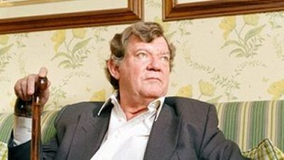

Tuesday, August the 7th, 2012
back to: title, date or indexes
Robert Hughes, 1938–2012.
“The pursuit of the Inner Child has taken over at a time when most people need to be figuring out how to use their Inner Adult.”
